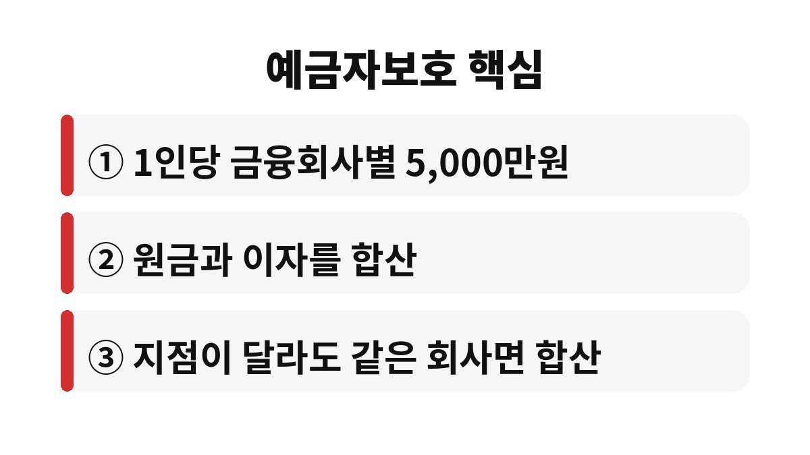

예금자보호 한도는 한 금융회사당 1인 기준으로 원금과 이자를 합쳐 5,000만원까지입니다. 한 곳에 5천만원 넘게 맡겨 두셨다면, 그 초과분은 어떻게 되는지 궁금하시죠?
예금자보호 한도는 이름 그대로 금융회사가 문을 닫는 경우에 예금보험공사가 대신 돌려주는 금액의 상한선입니다. 핵심은 "금융회사별로, 1인당"이라는 점이에요. 같은 은행의 A지점과 B지점에 나눠 넣었다고 해서 한도가 두 배가 되지는 않습니다. 한 회사로 합산하거든요.
또 하나 많이 놓치는 부분이 있습니다. 한도 5,000만원에는 원금만이 아니라 약정한 이자도 포함된다는 거예요. 원금 5,000만원을 딱 맞춰 넣었는데 이자가 붙으면 그 이자 몫은 보호 범위를 살짝 벗어날 수 있습니다. 그래서 예금자보호 한도를 지키려는 분들은 보통 원금을 조금 여유 있게 잡아 둡니다.
기본 원리는 맞습니다. 서로 다른 금융회사에 나누면 각각 5,000만원씩 보호받는 구조예요. 다만 함정이 하나 있어요. 이름이 달라 보여도 같은 금융회사로 묶이는 경우가 있고, 반대로 은행과 저축은행처럼 업권이 달라도 각각 별도 금융회사이므로 한도가 따로 적용됩니다.
그래서 예금이 많은 직장인이라면 "내가 지금 어느 회사에 얼마가 있지?"부터 한 번 적어 보시길 권해요. 월급통장, 적금, 예금, 이자 포함 금액까지 금융회사별로 더해 보면 의외로 한 곳에 몰려 있는 경우가 많거든요.
예금, 적금, 보통예금 같은 일반 예금상품은 보호 대상입니다. 반면 펀드, 주식, 채권처럼 투자 성격이 있는 상품은 예금자보호 대상이 아니에요. 같은 은행 창구에서 가입했더라도 마찬가지입니다. "은행에서 샀으니 안전하겠지"라는 생각이 가장 흔한 오해죠.
아래 표로 한 번에 정리해 볼게요.
| 구분 | 보호 여부 |
| 보통예금·정기예금·적금 | 보호 대상 |
| 펀드·주식·채권 등 투자상품 | 보호 대상 아님 |
| 한도 기준 | 금융회사별 1인당 원금+이자 5,000만원 |

정답이 하나는 아니에요. 금리가 조금 더 높은 곳을 찾아 나누는 방법도 있고, 아예 만기를 분산하는 방법도 있습니다. 중요한 건 한 곳에 몰아 두지 않는 습관이에요. 큰돈일수록 금리 0.1%포인트보다 보호 범위를 먼저 확인하는 편이 마음이 편합니다.
오늘 당장 할 일은 세 가지예요. 첫째, 금융회사별 예금 합계 계산하기. 둘째, 이자까지 더해 5,000만원을 넘는지 보기. 셋째, 넘는다면 분산할 곳 정하기. 이 정도만 해 두셔도 훨씬 든든합니다.
오해하시는 분이 많은데, 5,000만원을 넘는 금액이 곧바로 사라진다는 뜻은 아닙니다. 금융회사가 정상적으로 영업하는 동안에는 전액을 그대로 돌려받아요. 예금자보호 한도는 어디까지나 금융회사가 파산 같은 비상 상황에 처했을 때 적용되는 안전망입니다. 그 상황에서 한도를 넘는 부분은 해당 회사의 남은 재산에서 배당 형태로 일부만 돌려받게 될 수 있어요. 그러니 평소에는 걱정할 필요가 없지만, 큰돈일수록 만약의 경우를 대비해 두는 게 좋습니다.
특히 만기가 다가오는 예금이 있다면 재예치하기 전에 한 번 더 따져 보세요. 만기 때는 원금에 이자가 한꺼번에 붙어 한도를 넘기기 쉽습니다. 이럴 때 일부를 다른 금융회사로 옮겨 두면 부담이 훨씬 줄어요. 부모님 예금도 같은 기준이니 함께 챙겨 드리면 좋겠죠.
마지막으로 꼭 기억하실 점이 있어요. 예금자보호 한도는 예금보험공사 기준이라 해외 금융회사나 일부 공제 상품은 별도 제도로 운영되기도 합니다. 가입 전에 상품설명서에 보호 여부가 적혀 있는지 확인하는 습관만 들여도 큰 실수를 피할 수 있어요. 지금 통장을 열어 금융회사별 합계부터 적어 보세요.
혹시 지금 한 금융회사에 5천만원 넘게 있으신가요? 댓글로 궁금한 점을 남겨 주시고, 도움이 되셨다면 구독 눌러 주세요. 다음 글에서 또 쓸모 있는 돈 이야기로 만나요.
※ 본 글은 일반적인 정보 제공이며 투자 권유가 아닙니다. 보호 범위와 한도는 변경될 수 있으니 해당 금융회사나 예금보험공사에서 확인하세요.